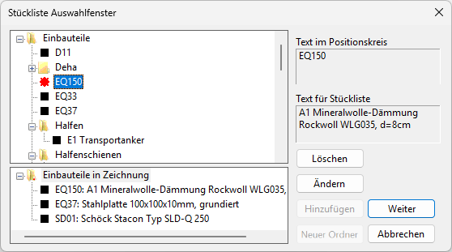
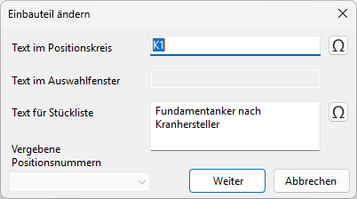
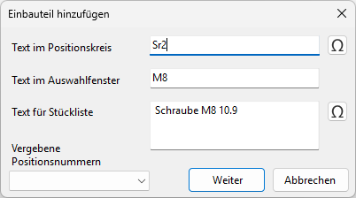
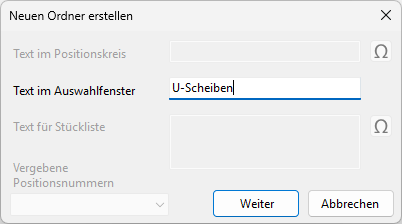

")
")
Bearbeiten der Stückliste. Öffnet den Dialog Stückliste Auswahlfenster.
Optionen im Dialog "Stückliste Auswahlfenster"
 |
Einbauteile
Wenn in der Ordnerstruktur der Verzweigungsknoten als "Plus (+)" dargestellt wird, enthält der Ordner weitere Unterordner oder Einträge. Klicken Sie auf das Plus-Symbol, um weitere Verzeichnungsebenen anzuzeigen. Um die Ebenen auszublenden, klicken Sie auf das Minus-Symbol (-).
Mit der rechten Maustaste erscheint ein kontextabhängiges Menü:
·Klick auf einen Ordner: Hinzufügen von weiteren Unterordnern oder Einbauteilen bzw. Löschen oder Ändern.
·Klick auf ein Einbauteil: Ändern oder Löschen.
Die Einträge werden alphabetisch sortiert.
Einbauteile in Zeichnung
Zur Übersicht werden hier die Einbauteile aufgelistet, die in der Zeichnung verwendet werden. Die Einträge werden alphabetisch sortiert.
Text im Positionskreis
Anzeige des Textes für das markierte Einbauteil, der im Positionskreis erscheint.
Text für Stückliste
Anzeige des Textes für das markierte Einbauteil, der in der Tabelle erscheint.
Löschen
Löscht den markierten Eintrag.
Ändern
Öffnet das Eingabefenster für den im Ordner Einbauteile oder Einbauteile in Zeichnung markierten Eintrag.
 Text im Positionskreis
Text im Auswahlfenster Dieser Text wird im Ordner Einbauteile angezeigt und kann dort für den Eintrag geändert werden. Text für Stückliste Beschreibung des Einbauteils. Dieser Text wird in der Stückliste geschrieben. Vergebene Positionsnummern Wenn ein Eintrag im Ordner Einbauteile geändert wird, werden hier die Kennzeichnungen aufgelistet, die bereits für Positionsumrandungen definiert sind. Siehe Eingabe: Text im Positionskreis. Weiter Der Eintrag wird übernommen. Abbrechen Die Aktion wird beendet, Eingaben werden verworfen. |

Hinzufügen
Hinzufügen eines Einbauteiles in den aktuellen gewählten Ordner. Öffnet den Dialog Einbauteil hinzufügen.
 Text im Positionskreis Geben Sie als Text eine Kennzeichnung des Einbauteils ein. Dieser Text wird in die Positionsumrandung geschrieben. Die Größe der Umrandung ist abhängig von der Anzahl der Zeichen. Bei mehr als drei Zeichen wird die Positionsumrandung entsprechend größer. Für Sonderzeichen steht die Funktion Siehe: Sonderzeichen einfügen; [Konst 1 | Texte | Sonderzeichen]. Text im Auswahlfenster Dieser Text wird im Ordner Einbauteile angezeigt. Text für Stückliste Beschreibung des Einbauteils. Dieser Text wird in der Stückliste geschrieben. Vergebene Positionsnummern Listet die Kennzeichnungen auf, die bereits für Positionsumrandungen definiert sind. Siehe Eingabe: Text im Positionskreis. Weiter Der Eintrag wird übernommen. Abbrechen Die Aktion wird beendet, Eingaben werden verworfen. |
Neuer Ordner
Erstellen eines Unterordners im aktuell gewählten Ordner. Öffnet den Dialog Neuen Ordner erstellen.
 Text im Auswahlfenster Geben Sie die Beschreibung des Unterordners an. Er wird eine Ebene unterhalb des markierten Ordners alphabetisch sortiert eingefügt. Übrige Eingabefelder Hier nicht aktiv, weil keine Positionen eingegeben werden können. Weiter Der Eintrag wird übernommen. Abbrechen Die Aktion wird beendet, Eingaben werden verworfen. |
Abbrechen
Bricht die Tabelleneingabe ab und wechselt zur Funktion [TxtSet].
Weiter
ISBCAD wechselt zur Funktion [TxtSet]. Das gewählte Einbauteil kann in der Zeichnung positioniert werden.
Siehe auch:
·Stückliste auf dem Plan aktualisieren
Zugehörige Referenz: